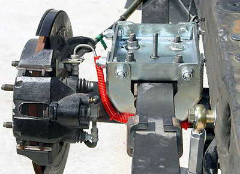

|
Traction Bars |
|
With 450 lbs.ft. of torque and a crude leaf spring/straight axle suspension, the Lightning can have vicious wheel hop/axle tramp, which occurs as the axle winds up on the spring and releases. |
| This can be very hard on the driveshaft and u-joints, makes full-throttle takeoffs on rough surfaces difficult, and is downright annoying. Traction bars work by solidly locating the rear axle to another point on the frame, thus preventing the axle from wrapping up. |
|
Although there are several traction bar options available, I chose the lower link-style "Track-Link" system from Metco Motorsport Solutions. While the Metco bars are among the more expensive (and, at 42 lbs, heavy) traction control devices, they are quiet and don't seem to have any adverse effects on ride quality or handling. The silver end pieces are very nicely finished aluminum. The other pieces are wrinkle-finished steel. All in all, exceptionally well constructed. These bars will add about 35 pounds, but it is semi-unsprung weight (a portion of the weight is supported by the chassis), so it's not as bad as it might seem. As you can see, the bars closely follow the angle of the rear leaf spring. The long bolts in the middle of the "T" pieces replace the existing front spring hangar bolt. These bars almost make a true 4-link suspension.
For a discussion of some of the other alternative designs, click here. Additionally, many drag racers have reported good results with very inexpensive designs like slapper bars and overleaf springs. I went with the Metcos because they look so well constructed and have easily adjustable pinion angle preload. |
|
Note that Metco states that the upper links are "suitable for vehicles lowered no more than 2 inches," while the lower links are "suitable for vehicles lowered more than 2 inches." I have confirmed this with Metco. Unfortunately, I ordered the bars from another vendor who did not warn me of this limitation. Metco cheerfully agreed to swap out the parts so that I could convert to lower links, even though I did not even purchase the products from them! Since Metco has provided me with a quality product, outstanding customer support, and are fellow South Carolinians, I strongly recommend their products. Installation is a bitch. |
|
Moroso/Competition Engineering makes the Slide-a-Link system for the Lightning. The unique features of the CE bars are that they can be easily adjusted by turning a bolt under the rear axle. Also, the rubber pieces act as dampers, allowing the bars to be, in effect, disengaged until under load (the rubber will then compress, forcing the bars into play). The S-A-L weigh somewhere between 42-57 lbs (can't get a reliable answer). If they are lighter than the Metcos, it's not by much. Additionally, the front spring eye on the leaf springs must be replaced with an aluminum bushing, which mean that the leafs obviously have to be removed, taken to a shop with a press, and replaced. And many suspension experts advise against making the front eye solid on anything but a drag car (see here).  Don't be fooled by the silver paint -- these are not aluminum, they are 100% steel. One final note: The so-called "lift bars" (Rancho/JDM/etc) are not lift bars at all; they are just long traction bars. The distinction should be clear from the image below (from Fred Puhn's How to Make Your Car Handle):
|
|
factory traction bars: |
|
Some Light Duty F250s apparently had some
sort of traction bar from the factory. This is all that I know: "Anti-Windup Bar: The anti-windup bar compensates for rotational torque placed on the rear axle (4001) during acceleration and braking by preventing the rear axle and rear spring (5560) from twisting (winding up). The anti-windup bar minimizes noise and vibration issues caused by excessive pinion-to-driveshaft angles during acceleration and braking."
|
|
|
|
Lincoln Blackwood trucks
also had "torque arms," which Ford also called "antiwindup bars." I
have incorporated them into
my rear suspension 3.0. I bought the front mounts and arms from fordpartsonline.com. The axle mounts are "link towers" (7" separation, 3" mounting width) from ballisticfabrication.com. The front bolts are 5/8" X 5", and the rear bolts are 9/16" X 4.5". I used a pair of "wedge lock" washers from McMaster to keep the front bolt from sliding (the front mounting holes are oblong). |
|
helper springs: |
| Another interesting option are devices that stiffen the leafs. These devices have the benefit of adding only minimal weight and not having any potential to cause the suspension to bind. They may not be effective with very high horsepower or traction (as with slicks), but should help with daily drivers. |
| One such device, the "Performance Traction Control Spring," is made by Hellwig and sold exclusively through JC Whitney. Several Lightning owners have used them and reported the elimination of axle wrap. According to one user, they can be adjusted to stiffen the leaf as desired. |
|
TrackBeast reported the following: As you know, the rear has much to do with ride quality. Put high rate springs and stiff shocks and you have a hay wagon. So I have kept the stock springs with poly bushings and Western Chassis front hangers and 2" shackles. With that setup you will need 6 degree shims. I couldn't believe the difference in traction that this new angle provided. Ruslow panhard bar, QA-1's with heim and Hellwig rear bar. But the thing that really gives me flexibility is the Hellwig traction springs. Certainly low tech but darn it works. These fit on the front half of the stock spring and as you tighten them, the spring rate is significantly increased. So at the track, I crank them to the max and its like putting a high rate spring. If you carry stuff, they give you higher load capacity. They can increase rear ride height by as much as 3/4" and significantly reduce axle wrap and improve traction. Not bad for a measly $60. So that's my all around set up that gives me a solid feel on the street, enables be to tow and allows me to embarrass quite a few "sports cars" at the track. That's why I love this truck! |
| Summit also makes "Sway Control Plus" helper springs. They are designed to install on the rear of the leafs, and not advertised for traction control. If they are used on the front of the leafs, though, they may very well work the same. |
|
Another such device is the Roadmaster "Active suspension." It is claimed to reduce or eliminate axle wrap, as well as stiffening up the rear suspension. I have not heard any detailed reports either way.
|
|
leaf clamps: |
 The
simplest device of all, however, are leaf spring clamps. They are
an old-school drag racer trick. By forcing the leafs together, the
spring rate is increased (and made less progressive). Several
Lightning owners have reported great results with this cheap and easy
fix. They are installed near the end of an intermediate leaf. The
simplest device of all, however, are leaf spring clamps. They are
an old-school drag racer trick. By forcing the leafs together, the
spring rate is increased (and made less progressive). Several
Lightning owners have reported great results with this cheap and easy
fix. They are installed near the end of an intermediate leaf. |